OFFClean
REC周辺・3倍拡大 / 3× detail
くっきりした枠と文字。すっきり仕上げたいときに。Crisp brackets and text for a clean finish.
写真やイラストに、ファインダー枠・REC・日時を。画像を開いて設定するだけで、撮影画面のような一枚を作れます。Turn photos and illustrations into camera-style images with viewfinder brackets, REC and a timestamp.
左でスタイルを選び、右で仕上がりを確認。まずは簡易モードで、枠・電池・RECを重ねてみましょう。Choose a style on the left and preview it on the right. Simple mode adds brackets, a battery and REC.
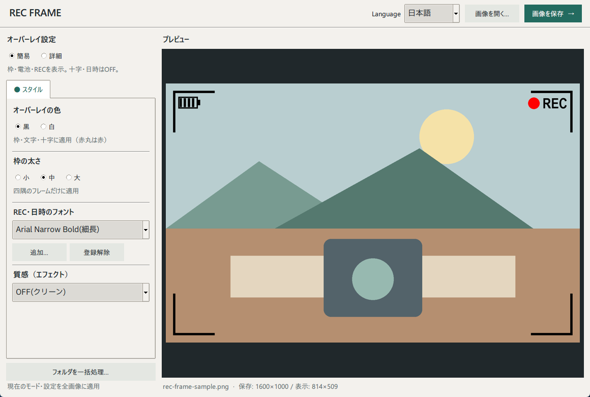
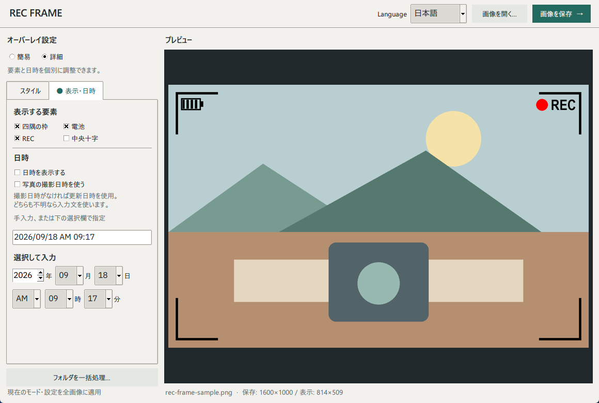
左が元画像、右がアプリで加工した画像です。Original on the left, app output on the right. On mobile, before comes first.
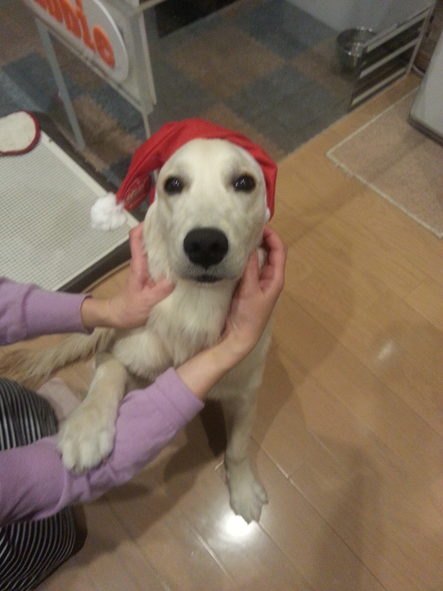
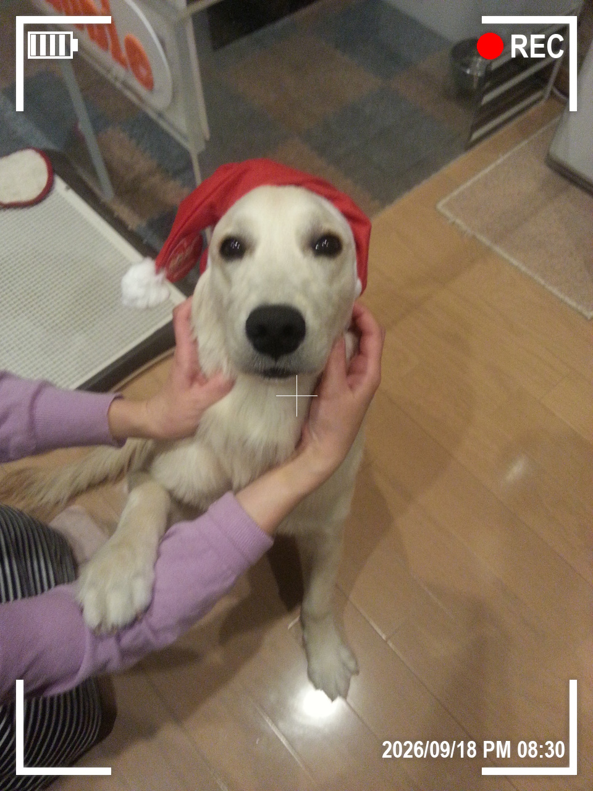
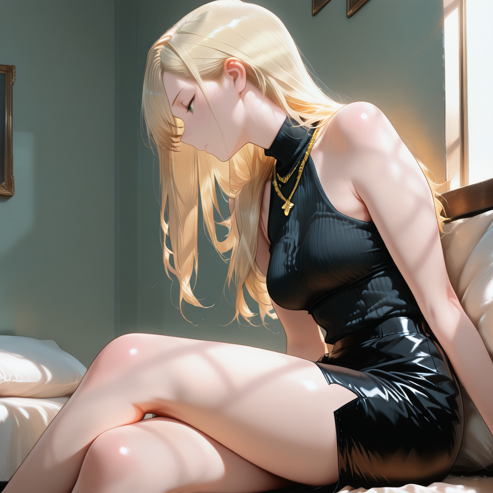
作例の日時は説明用の固定値です。Timestamps shown on this page are fixed sample values.
同じ写真・白枠・太さ「大」で比較。REC周辺の拡大で、細かな違いも見てみましょう。Same photo, white brackets and large weight. Only the effect changes; identical 3× crops show the detail.
くっきりした枠と文字。すっきり仕上げたいときに。Crisp brackets and text for a clean finish.
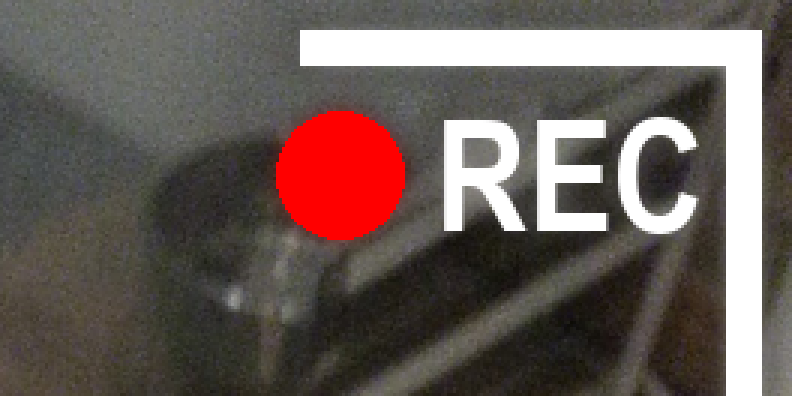
ほのかな発光。画面に光る表示のような柔らかさを。A gentle bloom behind the overlay, like a glowing display.
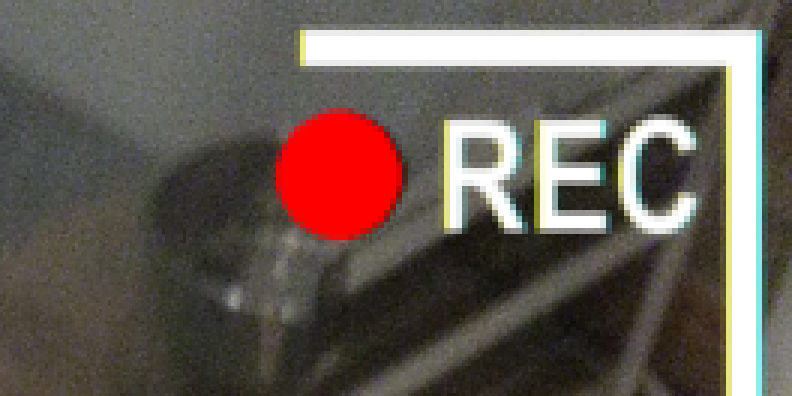
色ずれと粗さ。2000年代のデジカメ風の表示に。Color fringes and pixelated edges for a 2000s digicam look.
エフェクトがかかるのは、重ねた枠や文字だけ。写真全体の色や質感は加工しません。Effects apply only to the overlay. They do not filter the underlying photo.
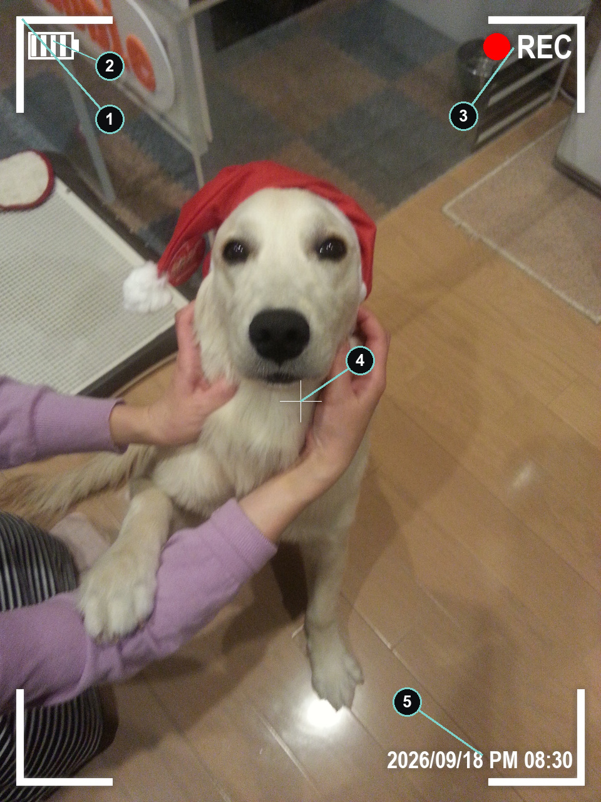
詳細モードなら、必要な表示だけを残せます。In detail mode, keep only the elements you need.
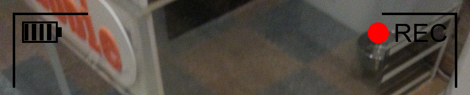
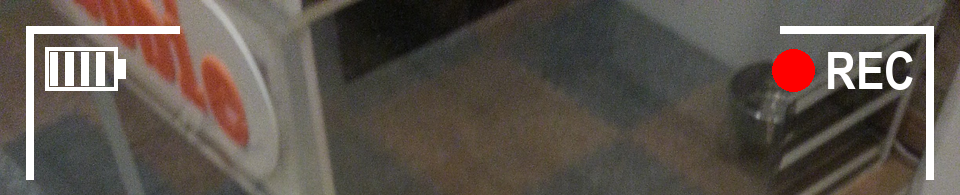
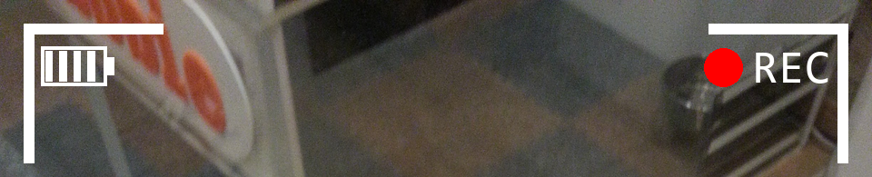
枠色は黒／白、枠太さは3段階。フォント候補10種に加え、所持フォントも登録できます。赤丸はいつも赤。Black or white, three bracket weights and ten font choices, plus your own fonts. The REC dot stays red.
フォントはOSのものを使い、見つからない場合は代替フォントで描画します。Fonts use your system; unavailable fonts fall back.
文字を手入力するか、「写真の撮影日時を使う」を選択。旅行の記録や撮影風の演出に。Enter your own text or use the photo's capture time.
撮影日時がない画像ではファイルの更新時刻を使い、それも取得できない場合は入力した文字を使います。Uses EXIF capture time, then file modification time, then your entered text.
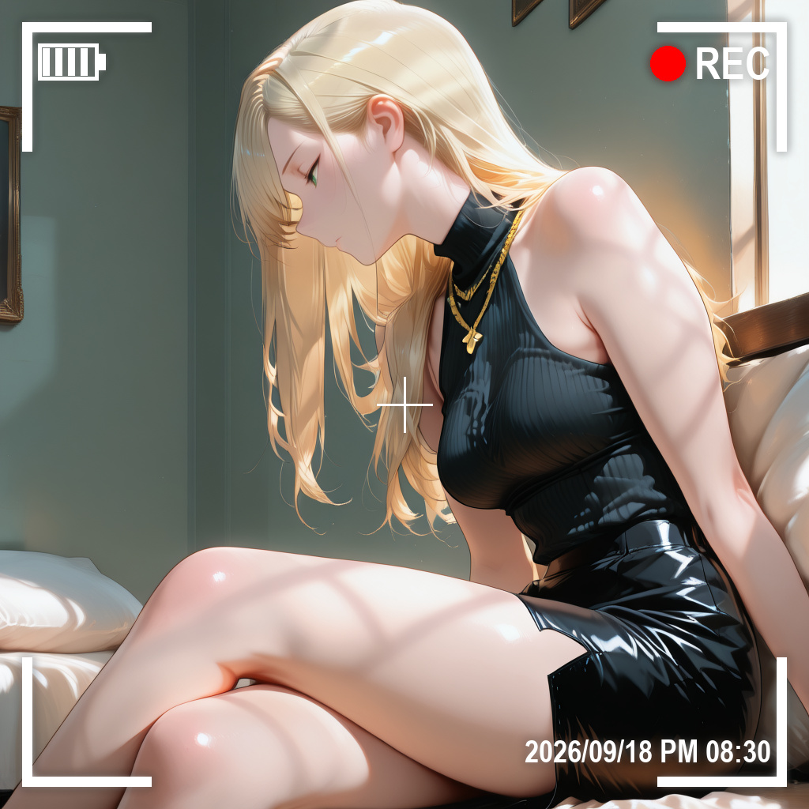
「フォルダを一括処理…」で、現在の設定をフォルダ直下の画像に適用。同名の出力がある場合は連番で保存します。Apply the current settings to images directly inside a folder. Existing output names get numbered alternatives.
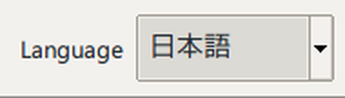
「Language」から即時切替。開いている画像や入力を保ったまま、表示言語を変えられます。Switch instantly via Language, keeping your image and inputs.
スタイル・日時・表示言語は自動記憶。次に起動するときも、前回の設定から始められます。Style, timestamp settings and language are remembered for your next session.
{元名}_rec{拡張子}。Save as {name}_rec{extension}.使い道のアイデアはユースケース集へ。Explore thumbnails, travel logs and more in the use-case guide.
Python 3.11以上・Pillow・tkinterを使う開発者向けの例です。環境構築はREADMEへ。For developers using Python 3.11+, Pillow and tkinter. See the README for setup.
.venv\Scripts\python rec_frame_app.py
rem Batch with remembered settings
.venv\Scripts\python rec_frame_app.py --batch input output
rem Batch with a config file and English messages
.venv\Scripts\python rec_frame_app.py --lang en --batch input output --config rec_frame_config.jsonWindows版exeも rec-frame-app.exe --batch input output で一括処理できます。The Windows executable also supports CLI batch processing.
GitHub Releasesから rec-frame-app.exe をダウンロードして起動。Pythonのインストールは不要です。Download rec-frame-app.exe from GitHub Releases and launch it. No Python installation needed.
署名なしのアプリです。初回起動でSmartScreenが表示された場合は、配布元を確認して「詳細情報 → 実行」を選択してください。The app is unsigned. If SmartScreen appears, verify the source before choosing More info → Run anyway.